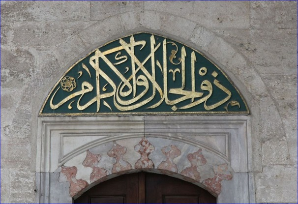
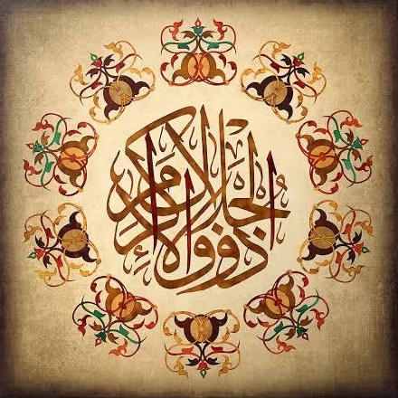

Her namazda selamdan sonra, Rabbimizi bu birleşik ismiyle yüceltiriz: 
55:27
zul-celâli vel-ikrâm
Celâl ve ikram sahibi...
Her tarafı Selâm kaplamış, sakin bir ortamda aniden fırtına kopar, Celâl ismi tecelli eder, her şey darmadağın olur. Fakat bütün bunlar boşuna bir gösteri değildir. İkramların kullara ulaşması için sürekli olarak tekrar edilir.
Sözlükte “azamet sahibi ve yüce olmak” anlamındaki celâl ile “cömert ve merhametli, asil ve şerefli olmak” mânasındaki keremden türeyen ikrâm kelimelerinin başına zû (sahip) getirilmesiyle meydana gelen bir terkip olup “celâl ve ikrâm sahibi” demektir. Bu isim Kuran'da iki yerde geçer: er-Rahmân 27 ve 78. Bunların ilkinde rab kelimesine muzaf olan “vech”in sıfatıdır; yeryüzündeki her canlı şey yok olurken azamet ve kerem sahibi Rabbin zâtının yüzünün bâki kalacağı ifade edilir. İkincisinde terkip “rabbin”in sıfatı konumundadır ve ilkinde olduğu gibi, “Azamet ve kerem sahibi olan Rabbinin adı yücelerden yücedir” mânasına gelmektedir.
Kaynak: İslam Ansiklopedisi
Aynı haşmetli sözün başka bir ifadesi: 
İlk gün vaadedilen “lafza-i celâl” açıklaması, 29 günde yerini bulmuş olmalı... Bütün proje Allah ismini bir nebze anlamak için yapılmıştı, ve en azından müellifin şahsında amacına ulaştı, el-hamdu lillah.
Esmâ-i Husnâ konusunu şu resimle mühürlemek uygun düşer:
55:26-27
kullu men 'aleyhâ fân
Yer üzerinde bulunan her şey fânidir.
veyebqâ vechu rabbike zul-celâli vel-ikrâm
Yalnız celâl ve ikram sahibi Rabbinin yüzü baki kalacaktır.